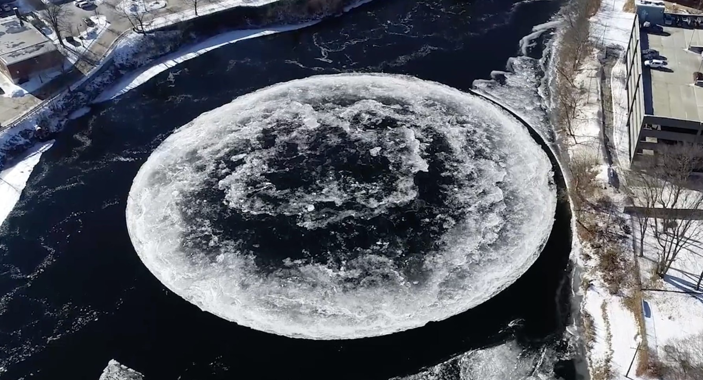
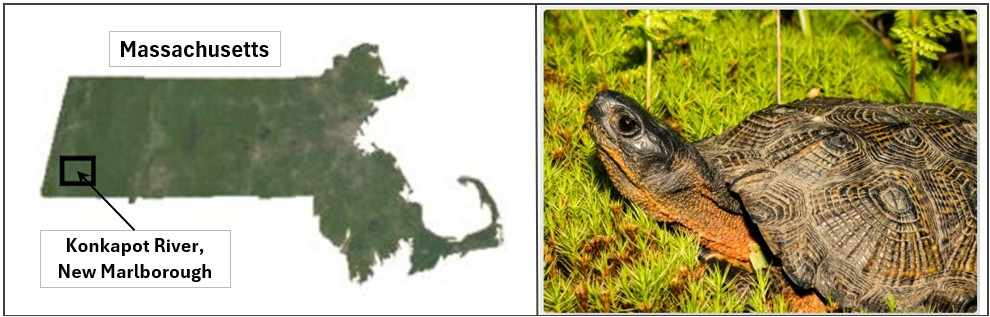
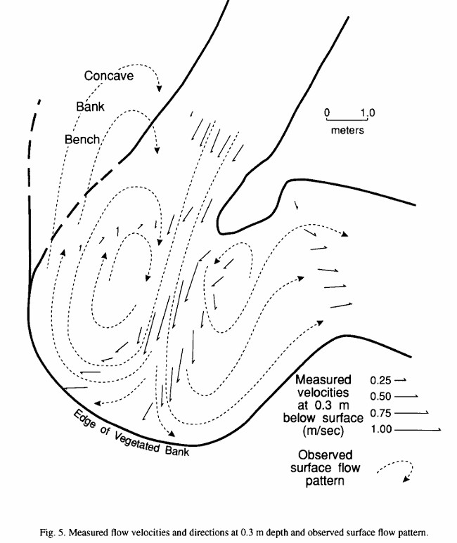
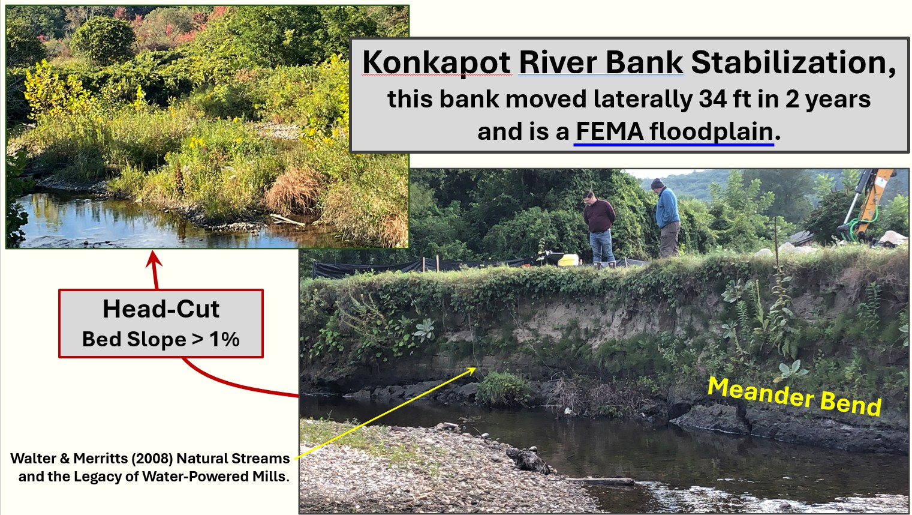

Part 1 - :
I ch (xs).

Homework 8
I ch (xs).
Our local river, the Presumpscot, is 26 miles long and currently has 9 dams on it (there used to be more). Even if the Presumpscot wasn't
currently covered with ice, the amount of sediment movement and the formation of natural geomorphic units is very limited (although it does
get some fun ice features occasionally, see Figure 4).

Instead of constructing a field map, I describe several geomorphic units associated with a circular meander pool (Andrle, 1994) and the
downstream point bar using a high resolution (less than 1 foot horizontal) Digital Elevation Model (DEM). The DEM was developed using drone
collected, LiDAR data for a section of the Konkapot River in New Marlborough, MA. The project the DEM was developed for is described in Part 3
(optional reading), the site is also great habitat for the 'threatened' Wood Turtle. A site location map and native resident are shown below.

Circular meander pools (CMP) are described by Andrle (1994):
The typical shape of a CMP and the mid- to high-flow pattern
are shown in the adjacent figure.

Andrle, Robert (1994). Flow structure and development of circular meander pools. Geomorphology, 9:261-270.
